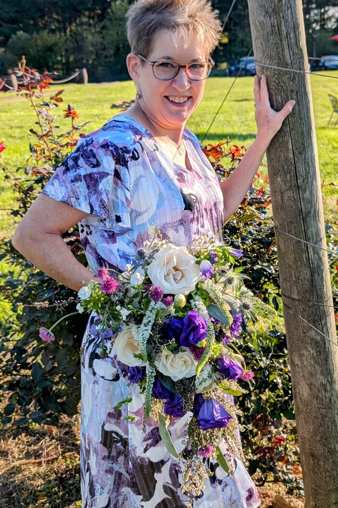
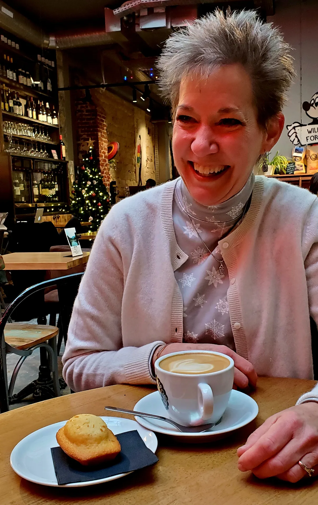

Comfort matters
Construction, scale, and bloom choice all affect how a piece feels after hours of wear, so those details are considered from the start.
Perfect for prom, homecoming, weddings, galas, milestone dinners, and photo shoots, these pieces are designed to move with you, complement what you’re wearing, and stay beautiful through the event.
Wearable flowers should never feel stiff, generic, or uncomfortable. They should feel like a natural extension of your look.

Construction, scale, and bloom choice all affect how a piece feels after hours of wear, so those details are considered from the start.
Each piece is shaped around dresses, suits, event tone, and personal style rather than a one-size-fits-all formula.
These accessories appear in close-up pictures all night long, so texture, color harmony, and polish are essential.
Share the occasion, event date, and whether you need corsages, boutonnieres, or something more creative.
Dress color, suit tone, inspiration photos, and style preferences all help shape the final piece.
The studio recommends flowers and construction methods that will look good and wear well.
Each accessory is handcrafted shortly before the event for freshness, balance, and durability.
Receive care guidance and enjoy florals that feel secure, polished, and ready to be photographed.
This page now better reflects the live site’s wearable-art positioning — pieces that are not just floral add-ons, but part of the memory itself.
From classic wrist corsages to modern boutonniere styling and floral jewelry, the goal is always the same: something custom, comfortable, and completely aligned with the look.



Share your event date, outfit details, and inspiration so the studio can design something custom and memorable.